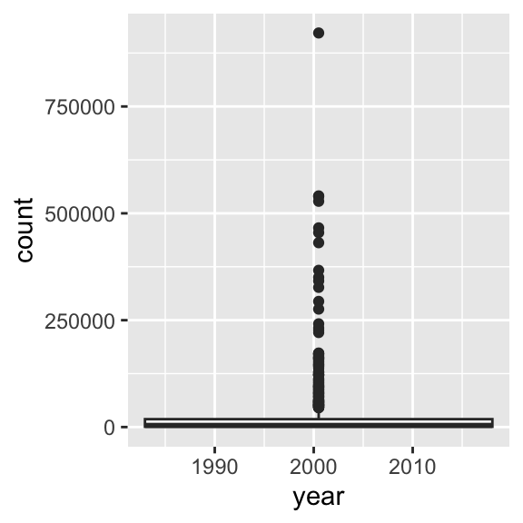
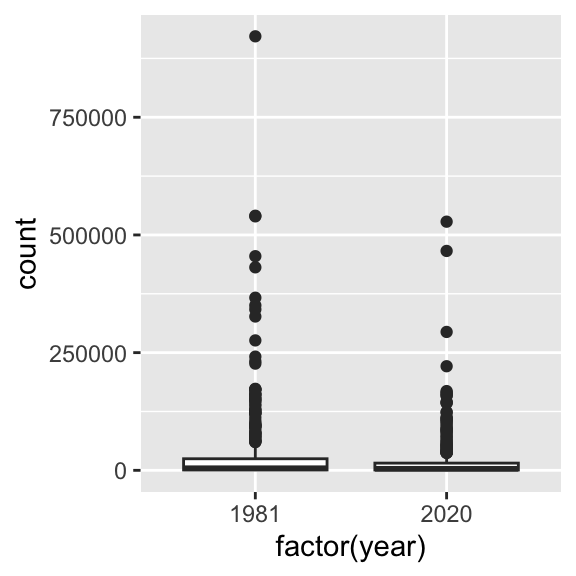

Factors
- A special type of variable to indicate categories
- both labels and their order (i.e. numbers)
- By default text variables are stored in factors during input
- numeric categorical variables have to be converted to factors
manually
factor creates a new factor with specified labels
Your Turn

- Inspect the
fbi object. How
many variables are there? Which type does each of the variables
have?
- Make a summary of year
- Make year a factor variable:
fbi$year <- factor(fbi$year)
- Compare summary of year to the previous
result
- Are there other variables that should be
factors (or vice versa)?
Note: factors in boxplots
boxplots in ggplot2 only work properly if the x variable is a
character variable or a factor:
twoyear <- dplyr::filter(fbi, year %in% c(1981, 2020))
ggplot(data = twoyear, aes(x = year, y = count)) + geom_boxplot()

ggplot(data = twoyear, aes(x = factor(year), y = count)) + geom_boxplot()

Data types: checking and casting
Checking for, and casting between types:
str, mode provide info on typeis.XXX (with XXX either
factor, int, numeric, logical, character, ... ) checks for
specific typeas.XXX casts to specific type
Casting between types
 Note:
Note:
as.numeric applied to a factor retrieves order of
labels, not labels, even if those could be interpreted as numbers.
To get the labels of a factor as numbers, first cast to character and
then to a number.
Levels of factor variables
levels(x) shows us the levels of factor variable
x in their current order- factor variables often have to be re-ordered for ease of
comparisons
- We can specify the order of the levels by explicitly listing them,
see
help(factor)
- We can make the order of the levels in one variable dependent on the
summary statistic of another variable
Reordering factor levels - manual
## NULL
manually (extremely sensitive to typos):
levels(factor(fbi$type,
levels=c("larceny", "burglary",
"motor_vehicle_theft", "aggravated_assault",
"robbery", "arson", "rape_legacy", "rape_revised", "homicide")
)
)
## [1] "larceny" "burglary" "motor_vehicle_theft"
## [4] "aggravated_assault" "robbery" "arson"
## [7] "rape_legacy" "rape_revised" "homicide"
What will happen if there are typos?
temp = factor(fbi$type, levels=c("Larceny", "burglary",
"motor_vehicle_theft", "aggravated_assault",
"robbery", "arson", "rape_legacy", "rape_revised", "homicide"))
levels(temp)
## [1] "Larceny" "burglary" "motor_vehicle_theft"
## [4] "aggravated_assault" "robbery" "arson"
## [7] "rape_legacy" "rape_revised" "homicide"
## [1] homicide rape_legacy rape_revised
## [4] robbery aggravated_assault burglary
## [7] <NA> motor_vehicle_theft arson
## 9 Levels: Larceny burglary motor_vehicle_theft aggravated_assault ... homicide
Reordering factor levels - using another variable
reorder(factor, numbers, function)
reorder levels in factor by values in numbers. Use
function to summarise (average is used by default).
levels(reorder(fbi$type, fbi$count, na.rm=TRUE))
## [1] "homicide" "arson" "rape_legacy"
## [4] "rape_revised" "robbery" "aggravated_assault"
## [7] "motor_vehicle_theft" "burglary" "larceny"
missing values in numbers? make sure to use parameter
na.rm=TRUE!
Your turn
For this your turn use the fbi
object from the classdata package.
- Introduce a rate of the number of reported
offenses by population into the
fbi data. You could use the
Ames standard to make values comparable to a city of the size
of Ames (population ~70,000).
- Plot boxplots of crime rates by different
types of crime. How can you make axis text legible?
- Reorder the boxplots of crime rates, such
that the boxplots are ordered by their medians.
- For one type of crime
(
subset or filter) plot boxplots of rates by
state, reorder boxplots by median crime rates
Changing Levels’ names
fbi$type = factor(fbi$type)
levels(fbi$type)
## [1] "aggravated_assault" "arson" "burglary"
## [4] "homicide" "larceny" "motor_vehicle_theft"
## [7] "rape_legacy" "rape_revised" "robbery"
levels(fbi$type)[6] = "Murder"
levels(fbi$type)
## [1] "aggravated_assault" "arson" "burglary"
## [4] "homicide" "larceny" "Murder"
## [7] "rape_legacy" "rape_revised" "robbery"
 Note:
Note: